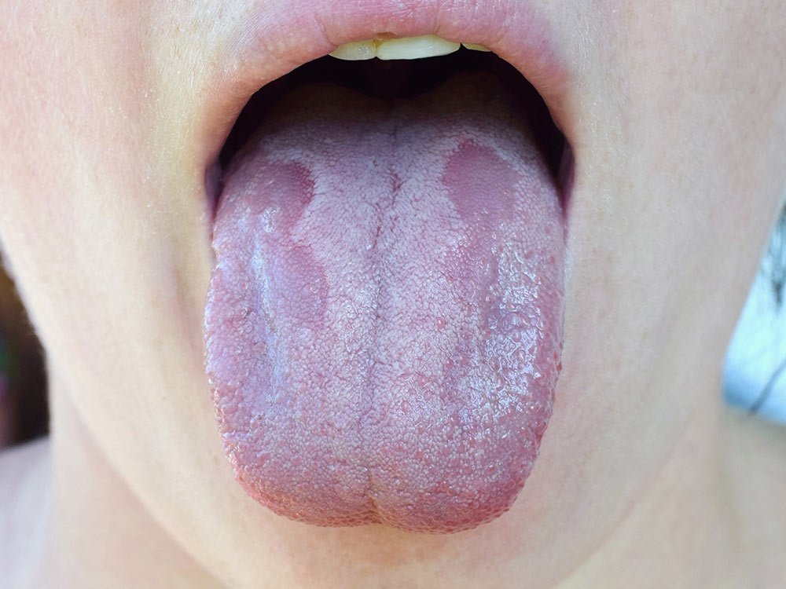

Thrush

SYMPTOMS:
- white or yellow patches of bumps on your inner cheeks, tongue, tonsils, gums, or lips
-
slight bleeding if the bumps are scraped
-
soreness or burning in your mouth
-
a cotton-like sensation in your mouth
-
dry, cracked skin at the corners of your mouth
-
difficulty swallowing
-
a bad taste in your mouth
-
a loss of taste
CAUSES:
- It’s normal for a small amount of C. albicans to live in your mouth, without causing harm.
-
Cancer treatments, including chemotherapy and radiation therapy, can also damage or kill healthy cells. This makes you more susceptible to oral thrush and other infections.
-
Conditions that weaken your immune system, such as leukemia and HIV, also increase the risk of developing oral thrush.
-
Diabetes can contribute to oral thrush as well. Uncontrolled diabetes weakens your immune system and causes high blood sugar levels.
HOME REMEDIES:
- saltwater
-
a solution of water and baking soda
-
a mixture of water and lemon juice
-
a mixture of water and apple cider vinegar